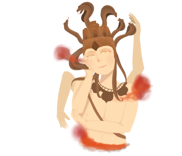
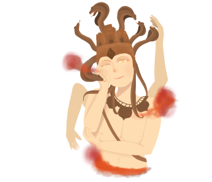

The best known Landmark in ‘Lop Buris the city of money’ in a name of ‘Phra Prang Sam Yot’ or ‘Three holy prangs’. Phra Prang Sam Yot is a place with beautiful historical castle that built in the 13th century in the classic Bayon style of Khmer architecture. This place is also one of best place to show the original of Hindu Trimurti.